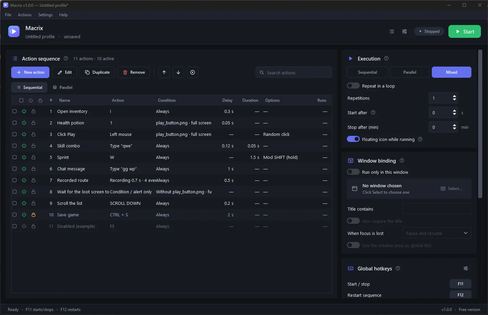

Keyboard and mouse macros, no code required.
Macrix waits for the right image to show up on screen, then presses your keys and clicks for you, in sequence, in parallel or mixed. Everything is set up with simple forms.
- Free, no sign-up
- No ads
- Installs without admin rights
- Uninstall anytime
- Checksum for every installer

What you get when you open Macrix.
Acts when the image appears
Crop a button from your screen and Macrix only acts once it shows up. Tune the confidence, the search area and the timeout.
Sequential, parallel or mixed
Run one action after another, several at once, or combine both in the same profile.
Full control over timing
Delay before the action, key hold time, repeats and intervals, with millisecond precision.
Built-in image editor
Remove the background, erase leftovers with a brush, zoom in for detail and undo any step.
Sound or spoken alerts
Play a sound or have Macrix say a sentence out loud, fully offline, and highlight the match on screen.
Only in the window you pick
Bind the macro to one program and it pauses by itself when you switch windows.
Profiles and global hotkeys
Save each macro as a profile and start, stop or restart it from any window.
Explains what happened
A live output panel and a diagnosis at the end of each run tell you why an action did or didn't fire.
Updates itself safely
New versions are checked against their published SHA256 before installing. Nine languages included.
From zero to your first macro in three steps.
Build the list
Click New action, type the key or record what you do, and give it a name.
Set when to act
Pick a reference image from your screen, the delay and how many times to repeat.
Press the hotkey
Macrix runs it. Press the hotkey again to stop whenever you want.
See every screen before you download.
These are real screenshots of the current version.
Safe to download, easy to remove.
What gets installed
Macrix installs for your Windows user only, with no admin prompt. Your macros stay on your PC.
Program folder (your user's Programs folder) ├── Macrix.exe the app ├── piper\ offline voice for spoken alerts └── unins000.exe uninstaller Documents\Macrix\ your data, kept on uninstall ├── profiles your macros ├── captures images you cropped └── settings and log
Why you can trust the installer
- Official downloads onlyInstallers are published on this site's GitHub Releases page, nowhere else.
- Checksum for every versionEach release ships a SHA256SUMS.txt. The built-in updater refuses any file that doesn't match.
- No account, no adsThe only connection Macrix makes on its own is checking for updates, and you can turn that off.
- Uninstall in one clickWindows Settings › Apps › Macrix › Uninstall.
Frequently asked questions
Do I need to know how to code?
No. Everything is set up through screens with fields and buttons.
Is it free?
Yes, the current version is free. If you want to support development, there is a support button inside the app.
How do I check that my download is genuine?
Open PowerShell in the download folder and run Get-FileHash .\Macrix-Setup-*.exe. The result must match the line for that file in SHA256SUMS.txt on the Releases page.
My antivirus flagged the installer. Now what?
Programs that simulate keyboard and mouse are often flagged by mistake. Download only from this page, check the SHA256, and contact support if in doubt.
Can I use it in any game or website?
Use Macrix only where automation is allowed. Many games and services prohibit this kind of tool, and the responsibility for how it is used lies with the user.
Which languages does it support?
English, Portuguese (Brazil), Spanish, German, Italian, Russian, Turkish, Chinese (Simplified) and Japanese.
Download Macrix and build your first macro today.
Free, for Windows 10 and 11. No sign-up. Latest version: v1.0.1.